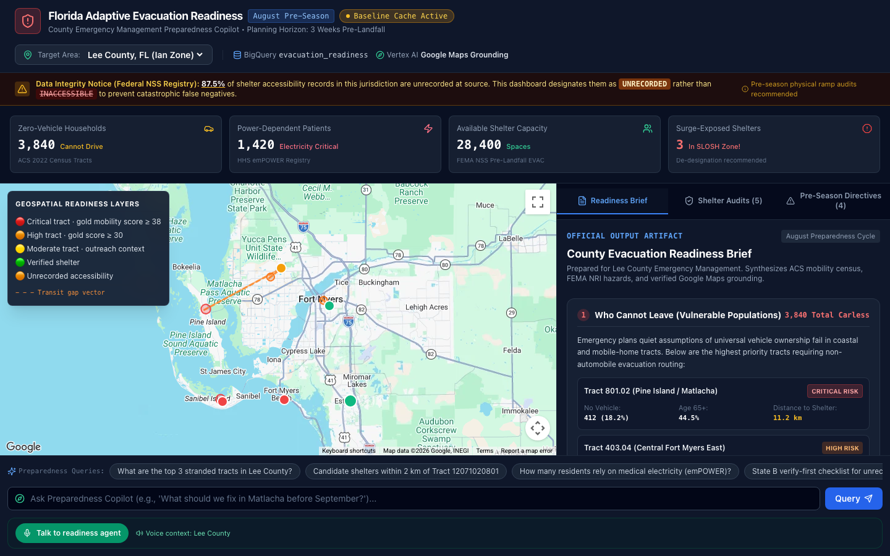
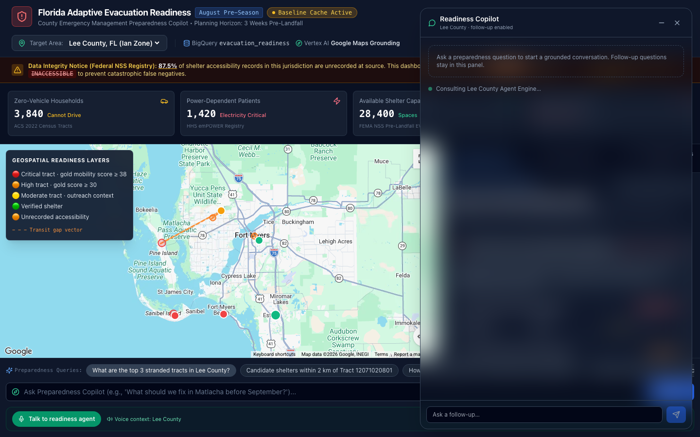

⌖
Prioritize
Rank stranded tracts and identify high-need populations without naming individuals.
Florida Adaptive Evacuation Readiness for Lee County, FL.
A county emergency-management copilot that turns public data, live Maps grounding, and trusted local partners into a plan people can actually follow.

A cross-functional team building the agent, the county command center, the data foundation, and the community handoff.
After Hurricane Ian, the median age of people who died was in the seventies. In Lee County, the planning brief must account for older adults, disability, no-vehicle households, mobile homes, medical power dependence, and shelters whose records are incomplete.
The planner asks one question. The agent turns it into a grounded sequence: prioritize risk, find outreach hubs, verify unknowns, and route people to the right support.
The command center gives the planner a ranked view of who may struggle, where they could go, which facts need live grounding, and what to fix before landfall.
Rank stranded tracts and identify high-need populations without naming individuals.
Find EVAC destinations, medical-needs shelters, pickup corridors, and backups.
Use Google Maps for place existence and routing; label what remains unknown.
Turn risk zones into partner outreach, peer recruitment, and human validation tasks.

